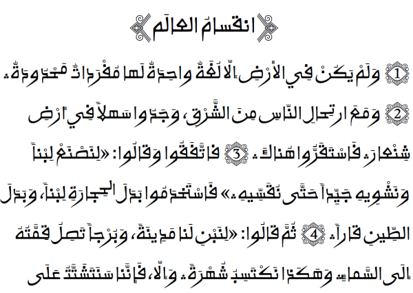

Ruwudu - Design
Ruwudu is a font for Arabic-based writing systems in the Kano region of Nigeria and in Niger. This style of writing African ajami has sometimes been called Sudani Kufi or Rubutun Kano. It is vastly different from script traditions of the Middle East. The bulk of the design of Ruwudu was based on what are known as ‘market edition manuscripts’.
One font from this typeface family are included in the Ruwudu release:
- Ruwudu Regular
Type Samples
Type samples showing some of the inventory of glyphs can be found here: Ruwudu Type Sample.
An example of some text is shown below.
Character Set
For a complete list of characters included in this font, see Character Set Support.
Font Features
Alternate glyphs that are available through features are demonstrated in the Features document.